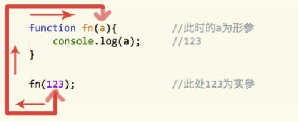

日常使用👆👆👆↑↑↑
工作原理👇👇👇↓↓↓
第一节：精讲
1.函数的概念及作用
函数是由事件驱动的或者当他被调用时可执行的可重复使用的代码块。
－－－－空调是由遥控器控制或者当开关打开时，可运行的家用电器（工具）
具备一点功能的代码段，代码段来实现具体的功能。要想实现一个函数的功能需要对函数进行调用。每写完一个函数就需要在使用时进行调用
2.函数的好处
重复使用－－－－空调不可能是一次性的，可以重复使用
忽略细节－－－－会用空调不一定会生产空调
选择执行－－－－夏冬使用，春秋不用
3.函数的定义（创建）：声明式和赋值式
通过关键字function声明
function fn(){}
其中：
function－－－为声明函数的关键字，指出这是一个函数
fn －－－－－－是函数的名称，类似于用来存储函数的变量
() －－－－－－为函数的参数，多个参数用 , 隔开
{} －－－－－－放置函数体，用于执行时，所要编译的代码段
通过变量赋值（未命名函数）：
var fn = function(){};
这种方式下，虽然这个函数没有名字，但是这个函数赋值给了fn，因此通过变量fn也能调用到这个函数
以上两种声明方式等价
都可以使用 函数名/变量名＋() 调用执行
4.函数的调用
fn(); －－－－函数名＋()
注意：千万不能丢掉括号；可先尝试理解fn()()()()
5.参数的声明和传递
函数的参数分为：形参和实参；
function fn(a){ //a为形参
console.log(a); //打印出123
}
fn(123); //123为实参
写在函数体内的参数称为形参，相当于该函数的某个变量，只不过不用var声明；需要遵循变量的命名方式。
调用时传递的参数为实参，相当于给变量赋值，可以传递所有数据
参数的传递过程：

第二节：应用
1.编写一个函数，计算两个数字的和／差／积／商
要求：使用传参的方式
2.编写一个函数，计算三个不同数字的大小，按从小到大顺序打印
穷举法
第三节：精讲
2.形参和实参
形参和实参都可以有多个，用逗号隔开，多个形参和实参之间必须相互一一对应
function fn(a,b,c){ //a = 1, b = 2, c = 3
console.log(a+b+c); //6
}
fn(1,2,3);
如果形参和实参不一致：
形参的数量比实参的数量多，多出来的形参，为undefined；
形参的数量比实参的数量少，多出来的实参，传递到arguments对象中；
形参的数量与实参的数量相等，一一对应。
3.return关键字
alert(parseInt(123.456)); //弹出123
function fn(a,b,c){
console.log(a+b+c);
}
alert(fn(1,2,3)); //弹出undefined
因为fn()函数没有返回值，只要没有返回值的函数，都返回一个undefined
可通过关键字return返回函数的值。
return的作用：1.返回值；2.终止程序
function fn(a,b,c){
console.log(a+b+c);
return a+b+c;
}
alert(fn(1,2,3)); //弹出6
什么是返回值？
将函数处理后的数据，返回到执行语句上，便于其他程序或用户调用或做二次使用
如果有return，此时fn(1,2,3)==return的返回值
如果没有return，此时fn(1,2,3)==undefined
return中止程序之后，return下面的代码不会执行
不一定所有函数都要有返回值，只有需要返回数据的函数才加return
return可以返回任何值，包含函数，当返回函数时，如果需要执行返回的函数，可将返回值当成一个函数名，加上一个()即可执行；
如fn(2)(3)(4);
4.arguments对象
如果形参和实参不一致：
形参的数量比实参的数量多，多出来的形参，为undefined；
形参的数量比实参的数量少，多出来的实参，传递到arguments对象中；
形参的数量与实参的数量相等，一一对应。
在函数中，形参和实参的个数，可以为任意个，甚至数量不对应，程序都不会报错，但是在计算过程中可能会出现NaN，如：
function fn(a,b,c){
return a+b+c;
}
alert(fn(1,2)); //弹出NaN
这是因为在JS中，参数在函数内部是以一个数组表示的，函数接受的永远是一个数组。
我们可以通过arguments对象来访问这个参数数组，从而获取传递给函数的每个参数。
在arguments身上有许多属性，如
arguments.length为数组的长度－－－－当前传进来几个参数
在js中一行代码结束，最好加上分号；
在js中一行代码结束，最好加上分号；
在js中一行代码结束，最好加上分号；
第四节：应用
编写任意个任意数字的求和 或 积的函数
第五节：综合应用
1.编写一个函数，计算任意两个数字之间所能组成的两位数的奇数，数字必须是个位数
比如： 计算0，3之间能组成的奇数个是01、21、03、13、23、31
2.某个公司采用公用电话传递数据，数据是四位的整数，在传递过程中是加密的，加密规则如下：每位数字都加上5,然后用除以10的余数代替该数字，再将第一位和第四位交换，第二位和第三位交换，请编写一个函数，传入原文，输出密文
3 7 1 5
8 12 6 10
8 2 6 0
0 6 2 8
一瓶酱油
一瓶醋
找一个空瓶